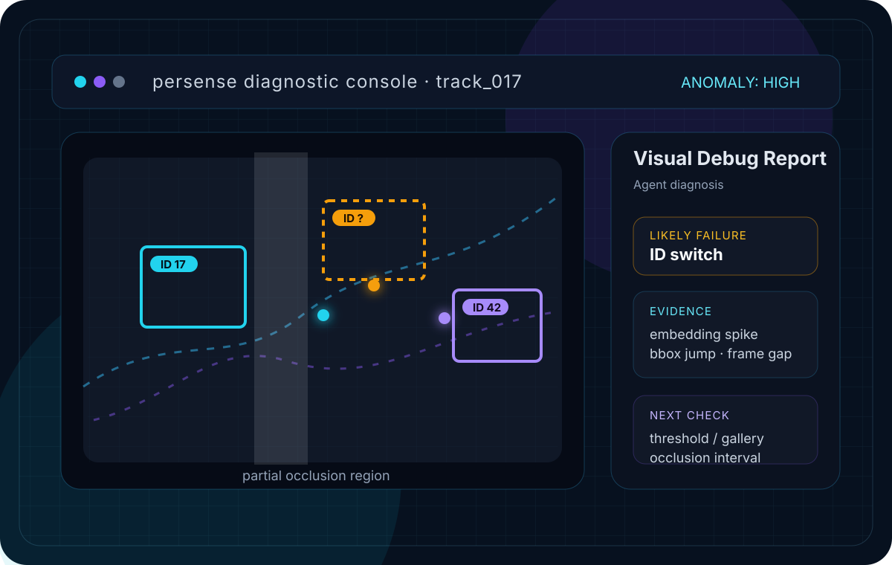
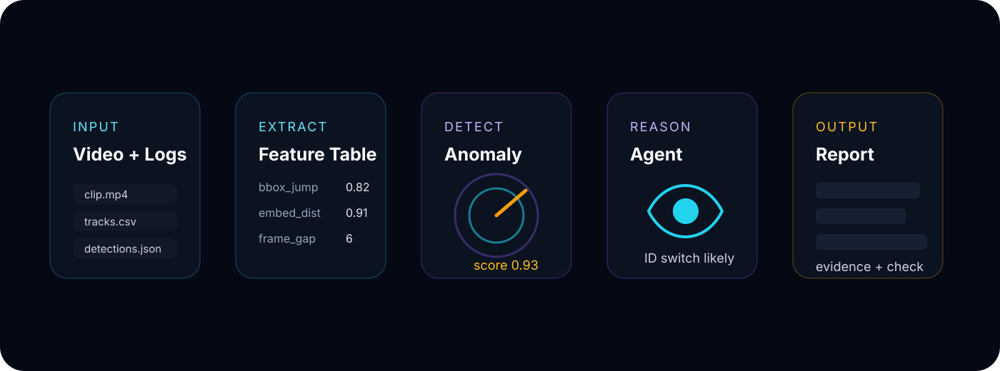
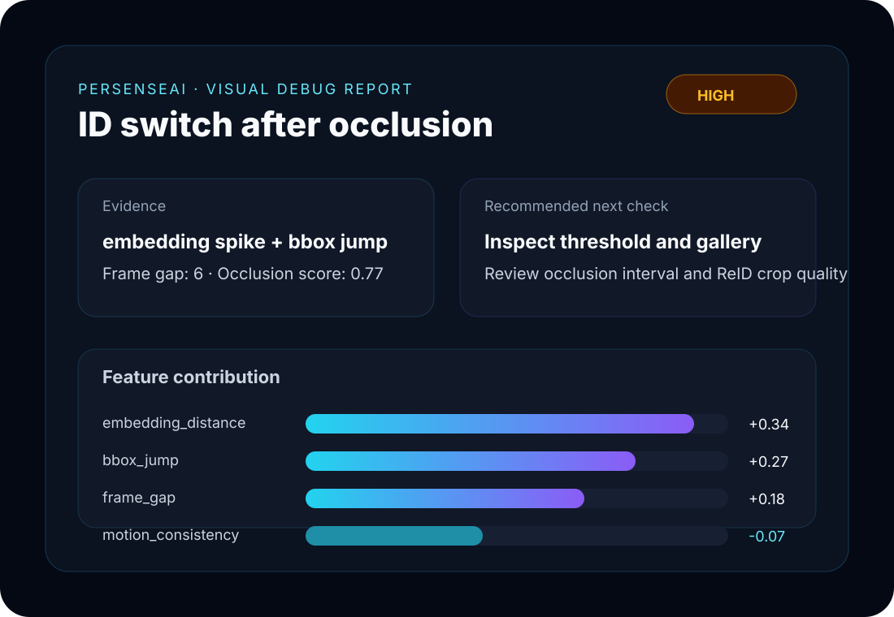

Visual Diagnostics Research
PersenseAI
Explorations in visual diagnostics and perception-system reasoning.
Public-safe research concepts for understanding how Computer Vision systems behave across video, logs, tracks, and model signals.

Concept workflow
From observation noise to research-oriented diagnosis.

→
Feature Table
→
Anomaly Signals
→
Diagnostic Reasoning
→
Analysis Summary
Failure cards
Exploring common CV failure modes.
ID Switch
identity flips
ReID Mismatch
embedding conflict
Occlusion
lost visibility
Detection Drift
box decay
Camera Handoff
handover gap
Domain Shift
scene change
Signals
Feature signals become evidence.
feature_table.track_017
featurevaluerisk
frame_gap6
bbox_jump0.82
confidence_drop-0.41
embedding_distance0.91
motion_consistency0.28
occlusion_score0.77
anomaly_score0.93
why suspicious?
Suspicious track
embedding_distance+0.34
bbox_jump+0.27
frame_gap+0.18
occlusion_score+0.14
motion_consistency-0.07
Analysis summary
Research evidence for iterative CV investigation.

VISUAL ANALYSIS NOTEseverity: high
Likely hypothesisID switch after occlusion
Evidenceembedding spike + bbox jump + frame gap
Recommended next probethreshold / ReID gallery / occlusion interval
Demo slot
Future interactive diagnostics replay.
Placeholder for a short concept walkthrough: inspect → compare signals → reason → summarize.
PersenseAI